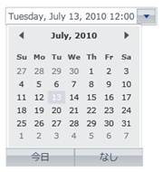

By Default, Current Culture will be “en-US” which you can check it from “System.Threading.Thread.CurrentThread.CurrentUICulture”.
Now, change CurrentUICulture as you want, as like below
Here, CurentUICulture should be set before IntializeComponent in your StartUp page (Here, MainPage.xaml.cs) or you can do in App.xaml.cs in the Application_Startup event.
|
CS (MainPage.xaml.cs) |
|
public MainPage() { System.Threading.Thread.CurrentThread.CurrentUICulture = new System.Globalization.CultureInfo("ja-JP");
InitializeComponent(); } |
Or
|
CS (App.xaml.cs) |
|
private void Application_Startup(object sender, StartupEventArgs e) { System.Threading.Thread.CurrentThread.CurrentUICulture = new System.Globalization.CultureInfo("ja-JP"); this.RootVisual = new MainPage(); } |

Figure 449: DateTimeEdit – Japanese Culture